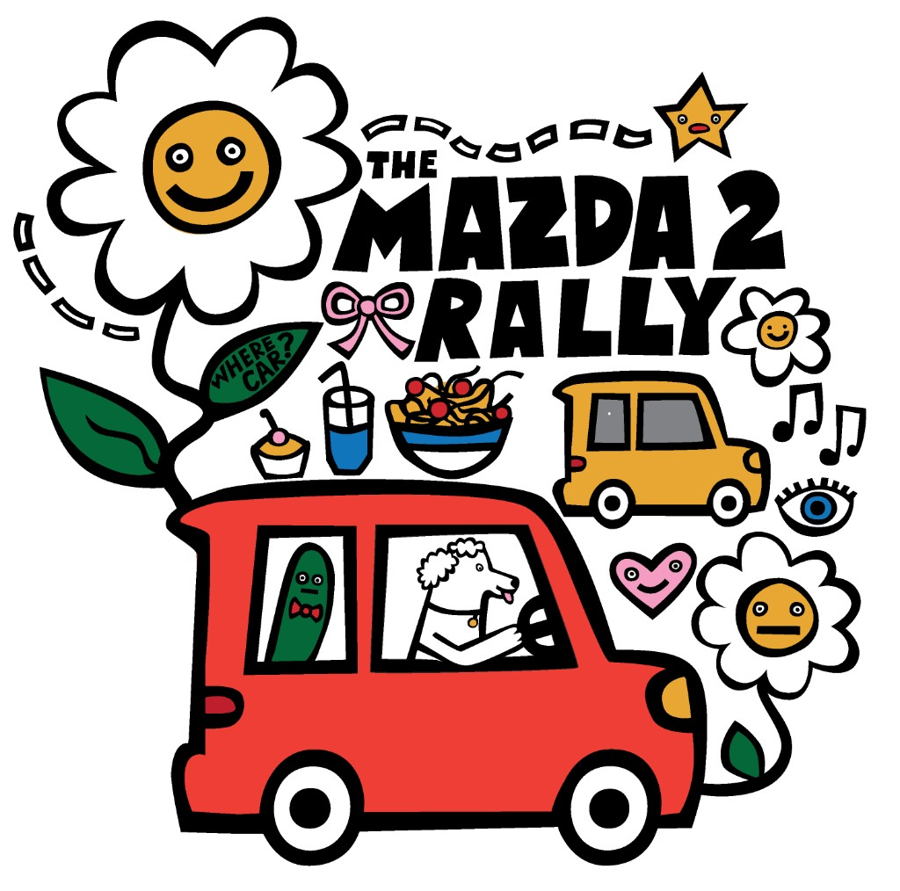
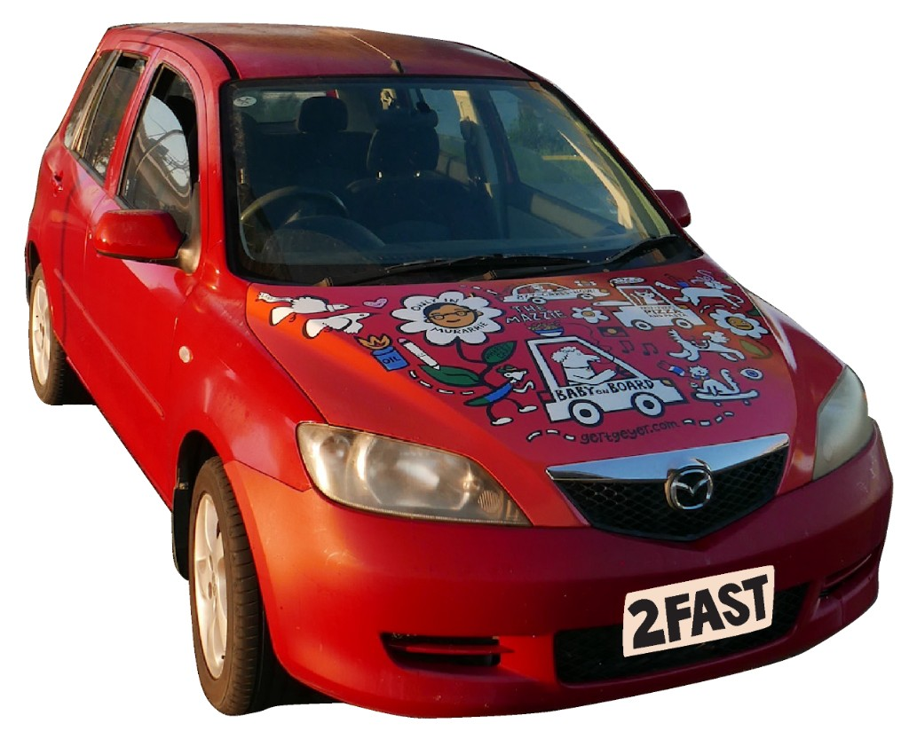

A completely unnecessary celebration of a good little car.
We're searching for early Mazda 2s still getting around South-East Queensland.
They're getting harder to find. So we're tracking them down, meeting their owners and finding out where these extremely practical little cars have been for the past 20-odd years.
Then we're getting them together.

We're trying to find them
If you're reading this because you found one of our flyers on your windscreen: hello. We found you.
Early Mazda 2s are becoming an uncommon sight. But every now and then, another little box-shaped survivor appears in a car park, on a suburban street or somewhere in traffic.
We want to know where they are, who owns them, how long they've been around and what they've been through.
If you own one, tell us about it.

The search so far
Mazda 2s spotted: 7
Mazda 2 owners found: 1
The rally
Once we've found a handful of Mazdas, we will roll together in the inaugural Mazda 2 Rally.
Nothing too serious and definitely sticking to the speed limit.
A bunch of little Mazda 2s on a short drive together. We'll BBQ, Fast and the Furious style and there'll be a commemorative t-shirt for everyone who takes part.
The exact date, meeting place and route will be announced once we've found our inaugural group.
Why are you doing this?
Baby Dog Studio is interested in the ordinary things that become part of our lives — the places, objects, stories and rituals that somehow end up meaning something to us.
This project started with my own little red 2003 Mazda 2 and noticing the other old Mazda 2s still driving around Brisbane.
We found you!
Please tell us about your Mazda 2.
You don't need to commit to anything yet. We just want to know about you and your car.
Tell us what you're driving and, if you're interested, we'll keep you posted as the Mazda 2 Rally comes together.
We found another one.
Your Mazda 2 is officially part of the search.
We'll be in touch as we find more cars and start putting the inaugural Mazda 2 Rally together.
In the meantime, if you see another early Mazda 2 in the wild, tell them we're looking for them.
Your details will only be used to organise the Mazda 2 Rally and contact you about this project. Baby Dog Studio won't sell or share your contact details.
What is Baby Dog Studio?
Baby Dog Studio is an artist-led project by Gert Geyer making stories, artworks, events and objects that celebrate the places and communities around us.
Sometimes we make our own strange little projects. Sometimes we work with other people and communities to make theirs.
If you have an idea you're looking to bring to life, get in touch.